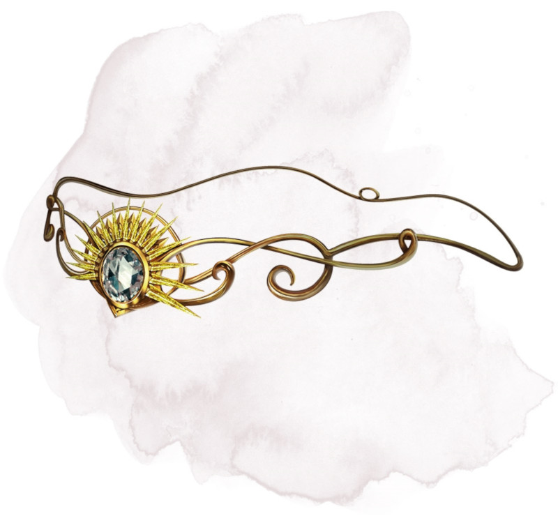

Diadème de destruction
Objet merveilleux, peu commun
Tant que vous êtes équipé de ce diadème, vous pouvez l'utiliser en prenant une action pour lancer le sort rayon ardent. Lorsque vous effectuez le jet d'attaque avec un sort, vous le faite en utilisant un bonus de +5 à l'attaque. Le diadème ne peut être réutilisé de la sorte avant le prochain lever de soleil.
Dungeon Master´s Guide (SRD)
